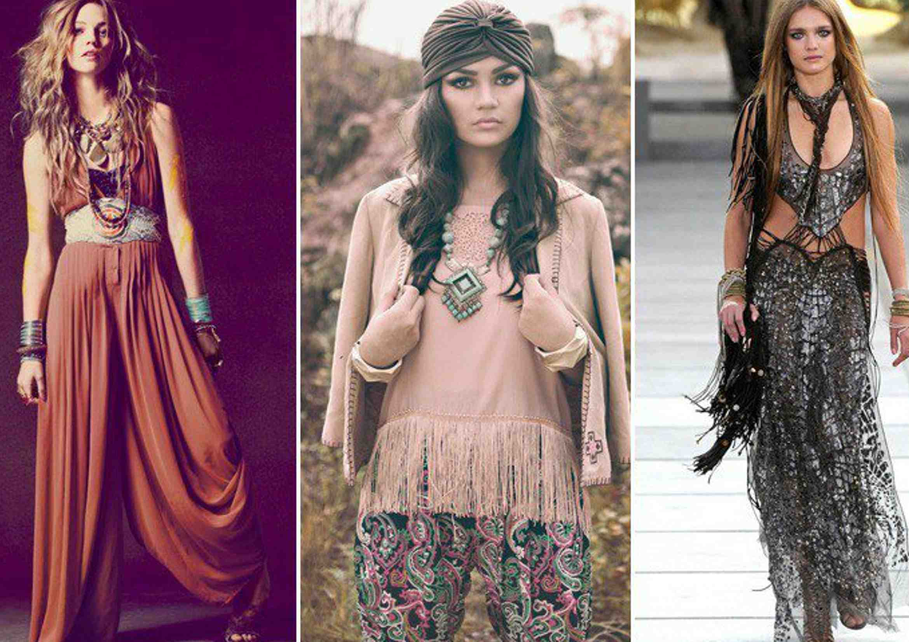

En los tricotados de Missoni, los estampados de Etro y Altuzarra y la artesanía de Gabriela Hearst. El look boho se encuentra en el corazón de las firmas que lo convirtieron en su ADN, y aunque no podemos hablar de tendencia si nunca desapareció, hoy ha vuelto a irrumpir con fuerza en la pasarela. Con él reaparecen en escena esos otros 2000, los que definieron Sienna Miller o Kate Moss vestidas de Matthew Williamson. Era 2013, o 2014. Para aquellos cuya memoria no arranca hasta los años 90, la visión de lo que representaban las chicas boho era una versión, pulida y empaquetada, de lo que se entiende por moda hippie. Un cóctel de ropa antigua y diseños coloridos, sazonado con el desaliño justo del grunge.
Las gemelas Olsen vinieron a representar ese estilo que convirtieron en el sello de su guardarropa. Fueron, de hecho, dos de sus mejores embajadoras. Pero cuando lo defendieron en la alfombra roja de la Met Gala, allá por 2017, la industria llevaba décadas lucrándose de las chaquetas de cosaco y las camisas de campesino bordadas. Como sucedió con el punk, con los teddies y, en general, con todas las tribus urbanas, la moda fagocitó una contracultura para convertirla en cultura pop, al alcance de todos. La generación del flower-power y los chalecos de ganchillo evolucionó hacia una Alta Costura opulenta que encontró en otras culturas su principal motor creativo. Los términos en los que se llevó a cabo esa apropiación forman parte de una historia que justifica precisamente cómo las élites acabaron adueñándose de la estética hippie más nicho.